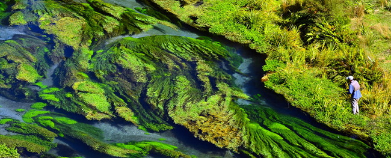

전국일주 여행
-
1~4일 : 오클랜드와 노스랜드
오클랜드 하버 브리즈를 넘어 오클랜드 노스쇼어 지역의 만과 해변으로 향한다. 고속도로를 따라 북쪽으로 달리면, 교외 주택 지역이 어느새 평화로운 목장 지대로 이어진다. 황가레이로 가는 도중에 마타카나의 파머스 마켓이나 고트아일랜드 해양 보호구와 같은 명소에 들러보자. 황가레이나 파이히아에 숙소를 잡고, 세계적으로 유명한 스쿠버 다이빙 포인트인 베이오브아일랜즈와 푸어나이츠를 여행한다. 문화를 체험하고 싶다면 와이탕이 트리티 그라운즈를 방문해 보자.
-
5일 : 오클랜드에서 보내는 하루
항만과 해변, 섬들이 있는 활기찬 도시 오클랜드는 항해의 도시로 잘 알려져 있다. 페리를 타고 도시 연안에 떠 있는 여러 섬들 중 한곳으로 여행을 떠나거나, 모험을 즐기고 싶다면 바다 카약에 도전해 보자. 와이헤케 섬은 포도원, 백사장 해변, 개성 있는 미술관으로 잘 알려져 있고, 휴화산인 랑기토토 섬은 멋진 워킹 트랙으로 유명하다. 많은 섬들이 오클랜드 시내에서 페리로 40분 이내의 거리에 위치해 있다.
-
6일 : 오클랜드-와이토모 동굴
와이토모 동굴 지역은 아름다운 지하 동굴 지대로 유명하다. 고대 석회암 지형 아래에 종유석, 석순, 반딧불이를 볼 수 있는 광대한 동굴 지대가 형성돼 있다. 가이드 워크와 가벼운 보트 크루즈에서부터 블랙워터 래프팅, 동굴 탐험, 앱세일링까지 자신에게 맞는 모험을 선택할 수 있다.
-
7일 : 와이토모 동굴-로토루아
로토루아로 가는 길에 목장과 호수, 숲을 지난다. 테쿠이티는 이 주변에서 유일하게 규모가 큰 타운이다. 여정을 떠나기 전에 이곳에 들러 필요한 물품을 사두자. 하이킹 애호가라면 여러 희귀한 새들이 서식하는 아름다운 푸레오라 삼림공원을 탐험해보는 것도 좋다. 또한 송어 낚시에 관심이 있다면 화카마루 호수에서 운을 시험해보자. 화카레와레와의 지열 증기 기둥이 보이고 냄새가 나기 시작하면 로토루아에 도착했음을 알 수 있다. 테푸이아를 방문해서 마오리 예술과 공예, 그리고 세계적으로 유명한 포후투 간헐천에 대해 알아보자.
-
8일 : 로토루아에서 보내는 하루
로토루아는 환태평양 지진대 한가운데에 자리하고 있기 때문에, 어디에서나 화산 활동을 관찰할 수 있다. 로토루아 주변의 지열 지대를 탐험하고 저녁에는 온천에서 피로를 풀어보자.
-
9일 : 로토루아-타우포
타우포로 여행을 떠나 마인베이 마오리 암각화를 구경해 보자. 이 암각화는 이 지역의 상징적인 문화 명소가 되었으며, 세대에서 세대로 계승되는 마오리 전통 지식과 기술을 잘 보여주고 있다. 이 암각화까지는 보트로만 갈 수 있으며, 카약을 타고 가면 가까이에서 볼 수 있다.
-

10일 : 타우포-웰링턴
중앙 고원을 여행하다 보면 통가리로 국립공원의 놀라운 화산의 풍경을 감상할 수 있다. 와이오우루에서는 뉴질랜드 육군박물관(Natuonal Army Museum)에 방문해 보자. 타이하페(Taihape, 세계 고무장화 던지기의 수도)를 향해 남쪽으로 달리다 보면 풍경이 강과 계곡으로 바뀐다. 그리고 자연이 만든 걸작인 망가웨카 협곡을 지나간다. 와이카나에 연안에는 희귀한 조류를 가까이에서 볼 수 있는 카피티 섬 자연 보호구가 있다. 카피티 해안은 고급 음식, 특히 치즈로 유명하다. 웰링턴으로 떠나기 전에 이곳에 들러 간단한 식사를 즐겨보자.
-
11일 : 웰링턴에서 보내는 하루
항만과 언덕 사이에 자리한 웰링턴은 걸어서 여행을 하기에 좋은 곳이다. 도시 곳곳에 숨겨진 거리 미술을 찾아보고, 카페에 들러 여유를 즐기고, 인근의 영화 스튜디오에서 투어에 참여해 보자. 기타 유명한 관광명소로 웰링턴 케이블카, 국회의사당, 질랜디아, 웰링턴 워터프런트 등이 있다.
-
12일 : 웰링턴-말버러
말버러는 단정하게 늘어선 무성한 포도나무들이 관광객을 맞이하는 와인 지대이다. 이 지역 최고의 음식과 와인을 맛볼 수 있는 가이드 투어 옵션이 아주 많다. 또한 말버러에는 4곳의 와인 지대와 100곳이 넘는 셀러도어를 가로지르는 380km 길이의 클래식 뉴질랜드 와인 트레일이 있다.
-
13일 : 말버러-핸머스프링스
핸머스프링스는 휴식과 럭셔리를 경험할 수 있는 휴양지이다. 온천에 몸을 담그거나, 다양한 스파 테라피를 받아보자. 또한 다양한 야외 액티비티도 핸머스프링스의 자랑이라 할 수 있다. 숲 속 하이킹, 승마 트레킹, 송어 낚시, 제트보트, 번지 점프, 골프 등 다양한 액티비티를 즐길 수 있다. 핸머스프링스의 필수체험을 확인해 보자.
-
14일 : 핸머스프링스-크라이스트처치
발 빠르게 변화하는 감각적인 크라이스트처치는 남섬 최대의 도시이다. 팝업바와 컨테이너 쇼핑몰이 전통 영국풍 정원과 나란히 자태를 드러내는 시내 중심가에서 2011년 2월에 발생한 지진 피해를 극복하고 다시 일어서는 이 도시의 저력을 볼 수 있다. 인기 있는 관광 명소로는 펀트 배를 타고 유람하는 에이번 강과 산악 자전거 여행지 포트힐스, 섬너 해변, 남극센터 등이 있다.
-

15일 : 크라이스트처치-더니든
남쪽으로 달리다 보면 서던알프스의 뛰어난 경관을 만나게 된다. 티마루에 도착하기 바로 전에 고급 도예품 생산지인 테무카를 지나게 된다. 기념품을 구입하고 싶다면 테무카 도예 공장에 차려진 상점을 방문해 보자. 오아마루에는 아름다운 역사적 건축물과 해질녘에 해변으로 올라오는 쇠푸른 펭귄 서식지가 있다. 더니든으로 가는 길에 유명한 모에라키볼더스에 멈춰 그 신비로운 모습을 감상해 보자.
-
16일 : 더니든-스튜어트 섬
남쪽으로 차를 타고 30분쯤 가면 피크닉과 요트, 워터스키로 인기가 많은 평화로운 와이홀라 호수에 도착한다. 캐틀린스를 지나 구불구불한 도로로 계속 운전해가다 보면 물개와 바다사자, 야생의 해변, 폭포, 산책로, 강을 볼 수 있다. 스튜어트 섬(마오리어로 라키우라)으로 가는 페리를 타기 전에 인버카길이나 블러프를 방문해 보자. 섬까지 페리로 1시간이 걸리며, 가끔 높은 파도가 치기도 한다. 스튜어트 섬의 대부분은 뉴질랜드에서 가장 최근에 지정된 국립공원에 속해 있다. 여행객들은 이곳에서 야생 그대로의 자연을 경험할 수 있다.
-
17~18일 : 스튜어트 섬-피오르드랜드
밀포드사운드로 향하는 도로는 뉴질랜드에서도 경치가 가장 좋기로 손꼽힌다. 겨울철(7월-8월)에 이 도로 위를 운전하려면 겨울철 운전 요령을 미리 숙지하도록 한다. 느긋한 여행을 원할 경우 테아나우에서 버스 투어를 예약하면 된다. 비교적 평탄한 목장 지대에서 시작해 피오르드랜드 국립공원이 가까워지면서 너도밤나무 숲으로 들어선다. 도중에 애버뉴 오브 더 디서피어링 마운틴(Avenue of the Disappearing Mountain, 사라지는 산으로 가는 길)과 거울 호수(Mirror Lakes)를 찾아보자.
-
19일 : 피오르드랜드-퀸스타운
고산 휴양지 퀸스타운은 흥미진진한 매력 만점의 여행지이다. 번지 점프, 제트보트, 승마 트레킹, 래프팅, 강 서핑 등 거의 모든 종류의 모험을 즐길 수 있는 곳이다. 또한 럭셔리 여행지로서 미식과 와인, 스파 트리트먼트, 여유로운 골프 라운드를 즐길 수 있다.
-
20일 : 퀸스타운-와나카
와나카로 가는 가장 빠른 길은 크라운레인지 로드(Crown Range Road)이다. 길이 험하기는 하지만 절경을 감상할 수 있다. 조금 더 쉬운 루트로 샷오버 강과 던스턴 호수, 클루서 강을 끼고 달리는 길이 있다. 이 길을 따라가다 보면 깁스턴 와인 지대와 카와라우 다리에서 번지 점프하는 광경을 볼 수 있다. 어느 길을 택하든 매력적인 역사 마을 애로우타운에 잊지 말고 들러보자.
-
21일 : 와나카-폭스 빙하
여유롭게 아름다운 풍경을 즐기고 웨스트코스트 빙하를 둘러볼 수 있도록 일찍 하루를 시작한다. 여정을 시작하면 경치가 아름다운 하웨아 호수를 지나 와나카 호수의 북쪽 끝에 닿는다. 유명한 ‘브래지어 울타리(bra fence)’는 그냥 지나칠 수 없는 곳이다. 재미로 시작된 것이 지금은 명실상부한 지역의 명소가 되었다. 대자연에 안긴 마카로라 타운에서 앞으로의 여정을 위해 휴식을 취하고 휘발유도 가득 채운다. 우림 지대에 도착해서 폭포와 강의 아름다운 경치를 만끽해 보자.
-
22일 : 폭스 빙하-아서스패스-크라이스트처치
웨스트코스트 특유의 경관을 이루는 강과 숲들을 지나 크라이스트처치를 향해 동쪽으로 간다. 빠르게 흐르는 강물과 그 위로 놓인 다리들, 작은 마을들을 지나다 보면 안개에 휩싸인 서던알프스의 고산들이 보인다. 아서스패스 루트는 고대 마오리인들이 포우나무(옥)를 찾아 웨스트코스트로 이동하던 길이었다. 오늘날 이 길은 오래도록 기억에 남을 절경과 놀라운 토목공학의 기술을 보여주는 정교한 산악도로로 탈바꿈 했다.